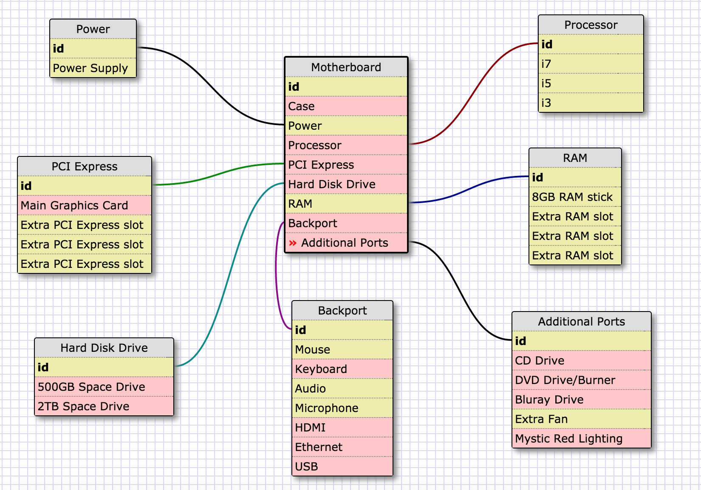

Moses Jung
Programmer/Developer
How Computers Work
The Basics
Aug 6, 2015
Computers come with 5 main parts: The Motherboard, Processor, RAM, Hard Disk Drive, and Power Supply. The Motherboard allows communication between all the electronic components of the computer which is powered by the Power Supply. The Processor is a small chip that attaches to the Motherboard and is the main tool that processes the basic instructions that drive a computer. The Processor gets really hot and requires a fan to cool it off. The RAM of the Computer (which stands for Random-Access Memory) allows data to be accessed, read or written, in almost the same amount of time respective to the location of data inside the memory. The Hard Disk Drive is a data storage device used for storing and retrieving digital information.
The Motherboard uses the power from the Power Supply to power up everything else in the computer. The typical Motherboard usually comes with RAM memory slots, a Graphics Card slot, and a couple additional PCI Express slots. The PCI Express slots are extra sockets mainly used for one or two additional Graphics Cards to allow more than 2 monitors without special hardware. These 2 to 4 Graphics Cards can be linked together to allow better performance in intesive graphical computing tasks such as gaming, video editing, etc. The Motherboard comes with an assorted variety of ports that face the back of the case normally including ports for the mouse, keyboard, audio, microphone, hdmi, Ethernet Port (internet), usb's, etc. The Motherboard also comes with ports that attach directly onto the Motherboard itself that mainly power on something else in the computer case. They are usually used for CD/DVD/Bluray Drives, additional fans to cool your computer down, and/or lights anywhere in your computer.
This Diagram below should give you a better idea of how the computer works through the motherboard:
